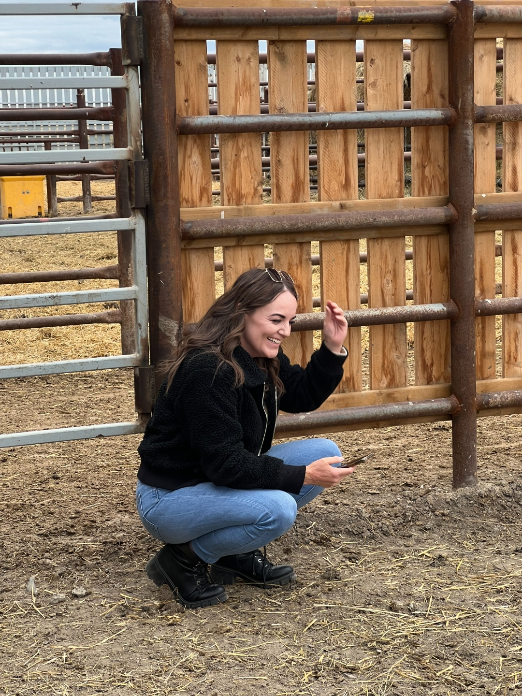
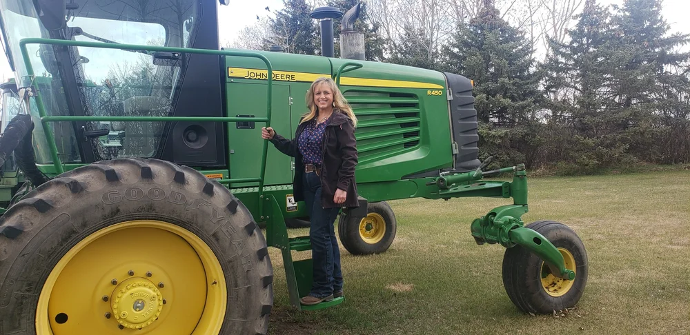
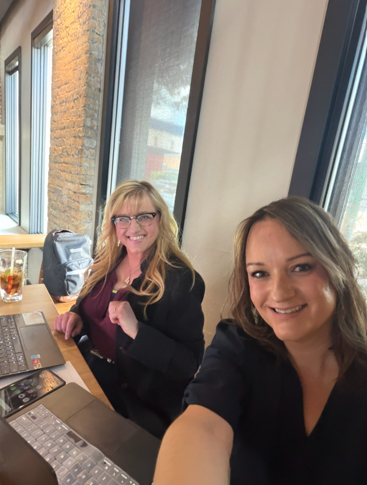

Step 1
Discovery
We get to know your business, your people, and your customers — the real story behind your brand.
- Business & audience deep-dive
- Competitor & market review
- Goals & success metrics
Built for ag retailers, agribusinesses, and farms across the Western Canadian Prairies, we combine agronomic expertise with social media strategy to help ag brands reach the right audience, build trust, and grow online.
Social Media Marketing Service
For Western Canada's Ag Industry.
One end-to-end service, built for ag. From getting to know your business to reporting on the numbers that matter — we handle it all in four connected steps.
Discovery, strategy, content creation, and community growth — fully managed, month after month.
We get to know your business, your people, and your customers — the real story behind your brand.
A clear plan and a voice that sounds like you — not a corporate template.
Latest trends and user-experience focused content creation. Photos, video reels, graphics, and copy that feel authentically ag — created by our team of social media marketing experts and vetted by an agronomist.
We post, respond, and connect your brand with the people who matter — plus targeted paid campaigns.

Agriculture isn't just another vertical for us — it's home. Our team grew up on Saskatchewan farms, ranches, and in ag retail. We know the difference between canola and camelina, calving season and seeding season, and we know what your customers actually care about.
Professional and practical experience in agronomy, farming, crop and livestock production, and agribusiness.
In-depth knowledge of the crop & livestock production cycles and seasons that drive your business.
In-depth knowledge of the broad range of products and services offered across the ag industry.
Goal-based strategy, trend and algorithm invested, audience focused — with monthly reporting.
Combined performance across AG Social's client accounts in 2025 — real ag brands, real growth.
Real words from real ag brands we've helped grow.
“Working with AG Social has been a massive upgrade to our existing social media presence. We had the content in mind but did not have the time or staff to execute it.”
“We hired a great social media company… We are worldwide, we feed the world, and we ship around the world all of our products from pulses to oilseeds to produce, and people want to see their food production and our social media team has done a great job of showing the fun side of what we do.”
“When we ask our new clients where they heard about us, 95% of them say they've seen us on social media.”
“AG Social has a keen understanding of messaging that resonates with people in Ag. They are responsive and work diligently to ensure social media content fits our brand and meets expectations. Thanks for the service and partnership we have enjoyed over the last 5+ years.”
AG Social by Wow Factor Media was founded in 2023 by two women who saw a niche need for an expert social media company with real roots in agriculture.

Patty Smith has a passion for agriculture, and years of experience working in the primary ag and agribusiness sectors. A lifelong farmer/rancher and ag industry business leader, she grew up on a farm in Saskatchewan and continues to be actively engaged in the ranch raising purebred Angus cattle and Suffolk sheep.
Patty started her career in ag policy and spent many years working for global agribusiness companies before spending the past 15 years in leadership positions in the ag retail industry. In addition to co-founding AG Social, she runs her own contracting business, Catalyst AgVentures, working with clients on business and talent development projects.
Patty is a graduate of the University of Saskatchewan and has served on the boards of Canadian Western Agribition, the Nokomis Savings and Credit Union, Saskatchewan Crime Stoppers, the Cargill Women's Council for North America, and numerous livestock organizations.

Ashley Drummond is the CEO of Saskatchewan's award-winning social media marketing team Wow Factor Media and co-founder of AG Social.
Ashley's career at Wow Factor Media has given her valuable experience working with a diverse range of ag community leaders and business owners throughout Western Canada — including ag businesses, family farms, ag organizations, non-profits, and government entities.
Ashley also serves on the Saskatchewan Chamber of Commerce Board of Directors, and is dedicated to sharing her skills to support and elevate women in business in Saskatchewan through mentorship with the Scotiabank Women's Initiative and WESK's All Access Expert Advice program.
Your business deserves more than a marketing agency. Your business deserves an innovative Western Canadian team that understands agriculture.
AG Social's marketing strategists combine professional marketing expertise with real-world agronomic knowledge across every facet of the ag industry. With team members working throughout Saskatchewan, Alberta, and Manitoba, we understand the regional markets, seasonal demands, and customer relationships that drive agriculture in Western Canada.
We become an extension of your team, working one-on-one with you to gain a deep understanding of your brand, products, customers, and business goals. That insight allows us to build marketing strategies and create content that is authentic, technically accurate, and designed to build trust, strengthen your brand, and deliver measurable business results.
AG Social's advisory board is made up of working farmers and ranchers from across Alberta, Saskatchewan, and Manitoba — keeping our work grounded in the reality of Prairie agriculture.
Tell us about your farm or business. We'll respond within one business day with thoughts, ideas, and next steps — no pressure, no obligation.